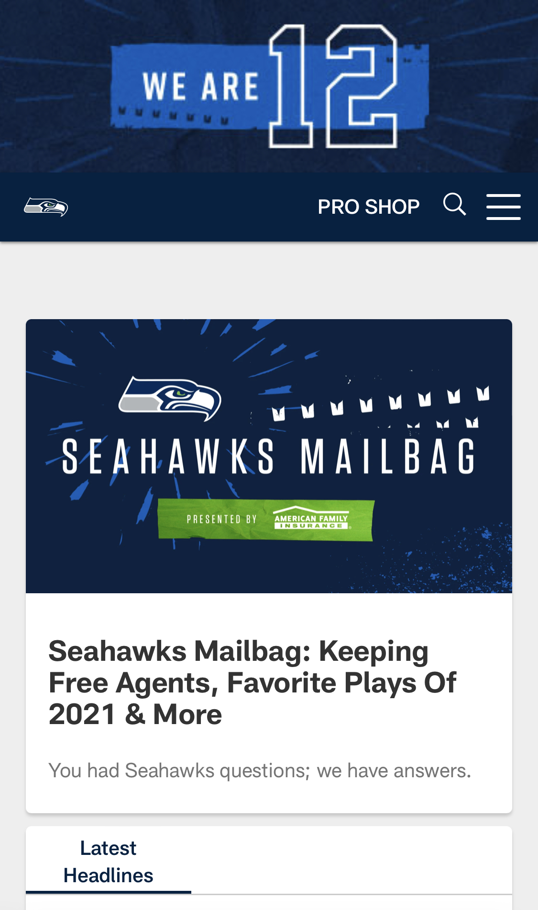

White Space
Udemy
udemy.comI chose Udemy for an example of white space because they did an excellent job with not overloading you with pictures or information, especially on the mobile viewer. This makes the important headlines and information easier to understand and draws attention to what really matters on the site.
Hick's Law
Jaybird
jaybirdsport.comI chose Jaybird because of their simple recommended actions. On the first part of their homepage, they simply provided one action- shop now. Instead of giving a bunch of different options, they gave us one option that is almost guaranteed to have what we're looking for.
Repetition
Seahawks
seahawks.com I chose Seahawks because when I visited the website, I immediately saw the team's logo plastered all over. For a sports team, the logo is important as a recognizable link so that even the casual sports fans can be aware of the team. All over the website and on every item on the page, every single thing had the seahawks logo. Even the displays of the fan merchandise they sell has the logo and team name all over it.